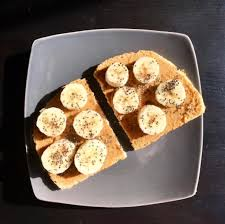

1-peanut Butter, Banana & Chia Seed Toast :
igredients
directions:
Put peanut butter on each toast then put the banana on it the put the chia seeds
on the top
2-Peanut Butter Banana Smoothie:
ingredients
directions
Throw a few frozen bananas into a blender along with the peanut butter,
milk, yogurt, honey, and salt. Blend until smooth. Top with a teaspoon
of chopped peanuts
3- Savory Oatmeal with Cheddar and Fried Egg:
ingredients
directions
Place oats and water in a microwave-safe bowl. Microwave at a high setting
(but not the highest, about 8/10 power setting) at one-minute intervals for a
total of 3 minutes. If you want a softer texture, continue microwaving
at 30-second intervals. Give the oats a little stir between intervals. When
the oatmeal is done, stir in shredded cheese, a small pinch of salt, and pepper.
Heat a nonstick pan with 1/2 teaspoon of olive oil over medium-high heat.
Add vegetables and cook for 2 to 3 minutes, until they soften. Spoon
vegetables over cooked oats. Reduce heat to medium.
Add
remaining 1/2 teaspoon of oil and fry the egg
Top with nuts, onions,
and za’atar, if you like.
4- ZUCCHINI BREAD OATMEAL:
ingredients
directions:
In a small pot, add milk/water, cinnamon and oats. Bring to a boil and simmer over medium heat,
stirring a few times ~ 3 min.
Add in the grated zucchini. Continue to simmer, stirring occasionally about 4 min until desired texture
is reached.
When cooked, remove from heat and stir in vanilla and brown sugar. Top with nuts, sliced bananas and
perhaps a drizzle of honey.
5- Peanut Butter Banana Oat Breakfast Cookies with dark Chocolate Chips:

ingredients
directions:
Preheat heat oven to 350 degrees.
In a large bowl, mix mashed banana & peanut butter until completely combined
then add in the applesauce, extract ~ mix again until all are completely combined.
Add in the oatmeal & nuts to the banana mixture & combine.
add the dark chocolate chips at this time if you want them mixed throughout
Let dough rest for 10 minutes.
Drop cookie dough, by spoonfuls,
onto a parchment paper lined cookie sheet & flatten cookies into circles.
(** if you just want the dark chocolate chips on the top of the cookies, add now)
Bake cookies approx. 20-30 minutes (some like their cookies less cooked,
some cooked more - try it both ways to find which works best for your tastes)
or until golden brown & done. Remove from oven & let rest on cookie sheet for 5 minutes,
then move to cooling rack.
6- Healthy Banana Bread:
ingredients
directions
Heat oven to 350°F. Grease an 8-by-4 inch loaf pan.
In a large bowl, combine the applesauce, honey, and brown sugar.
Add the eggs and beat well. Stir in the mashed bananas and milk. Add the baking soda, vanilla extract,
cinnamon, and 1/2 teaspoon salt and stir.
Gradually fold the flour into the banana mixture until just combined
(do not overmix).
Pour the batter into the prepared pan and bake until a toothpick inserted into the center of the loaf
comes out clean, 45-50 minutes. Cool in the pan for 10 minutes
7- peanut Butter, Yogurt, and Fruit Parfait:
ingredients
directions:
Whisk together the yogurt, peanut butter, and honey in a medium bowl until smooth.
Layer with the grapes, peaches,
and roasted almonds.